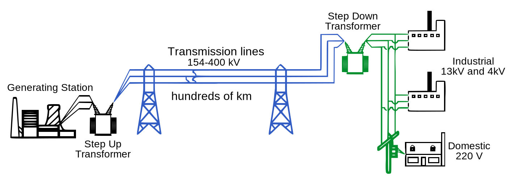
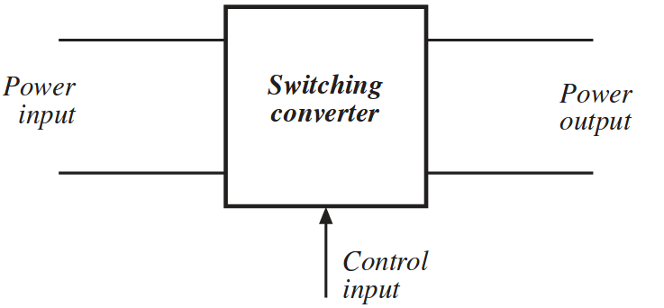
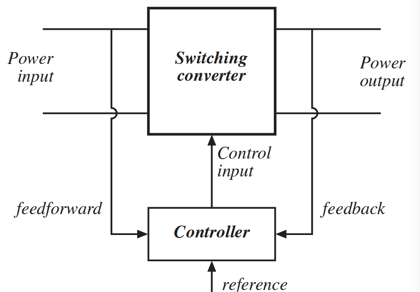
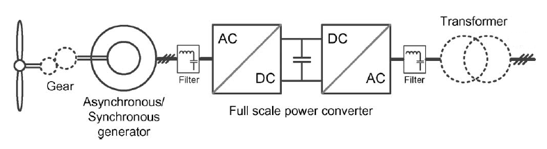
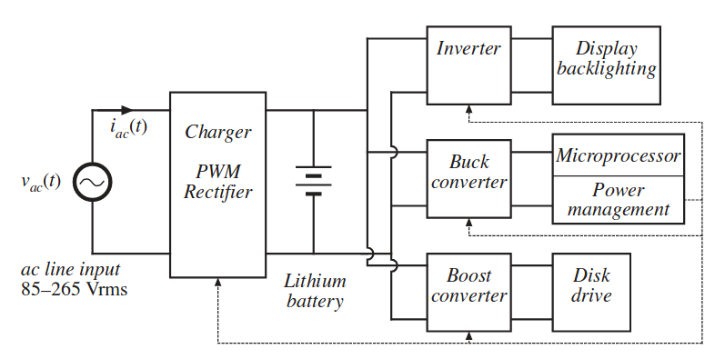

class: center, middle # EE-361 # Introduction to Power Electronics ## Ozan Keysan [keysan.me](http://keysan.me) Office: C-113 <span class="meta">•</span> Tel: 210 7586 --- # How to Transmit Electricity? <img src="https://static01.nyt.com/images/2017/01/08/nyregion/ny101-power-slide-272G/ny101-power-slide-272G-jumbo-v3.gif" alt="Drawing" style="width: 800px;"/> Reading: [How New York City Gets Its Electricity](https://www.nytimes.com/interactive/2017/02/10/nyregion/how-new-york-city-gets-its-electricity-power-grid.html) --- # How to Transmit Electricity? ## Simple Electric System  --- <img src="https://static.birgun.net/resim/haber-detay-resim/2020/10/07/efsane-hard-rock-grubu-ac-dc-shot-in-the-dark-ile-geri-dondu-789626-5.jpg" alt="Drawing" style="width: 700px;"/> ####For curious students: #### [War of Currents](http://en.wikipedia.org/wiki/War_of_Currents), [Edison's Revenge: Will Direct Current Make a Comeback?](http://www.scientificamerican.com/article/edisons-revenge-will-direct-current-make-a-comeback-in-us/), [60 years of HVDC](https://library.e.abb.com/public/aff841e25d8986b5c1257d380045703f/140818%20ABB%20SR%2060%20years%20of%20HVDC_72dpi.pdf) #### [AC/DC Music Band](https://youtu.be/44XYEeD1A1U?t=111) --- ### But now we have the power semiconductors: <img src="https://www.e-guasch.com/wp-content/uploads/2016/02/ixys-power-semiconductors-1200px.png" alt="Drawing" style="width: 700px;"/> - #### Diodes - #### MOSFETs - #### IGBTs - #### SiC, GaN Transistors etc. --- ### Frequency vs Power Ratings of Power Semiconductors <img src="https://www.iue.tuwien.ac.at/phd/park/img164.png" alt="Drawing" style="width: 700px;"/> --- ### Typical Power Transistors <img src="https://www.mouser.com.tr/images/marketingid/2017/img/197493898_IXYS_PowerMOSFETs.png" alt="Drawing" style="width: 380px;"/> <img src="https://upload.wikimedia.org/wikipedia/commons/b/b5/IGBT_3300V_1200A_Mitsubishi.jpg" alt="Drawing" style="width: 350px;"/> #### From tiny MOSFET packages to several kA IGBT Modules --- ## Fundamental Block Diagram of Power Converters  --- # Different Source Voltage Characteristics -- ## - DC (At various voltages) -- ## - Single Phase AC (Commonly 110-240V 50/60 Hz) -- ## - Three Phase AC ## ... --- # Different Requirements at the Output -- ## - DC (Regulated, constant magnitude) -- ## - Adjustable DC -- ## - AC (Constant frequency, variable magnitude) -- ## - AC (Variable frequency and magnitude) --- # Control is almost always needed --  #### For voltage regulation, overload protection, power quality, grid synchronization etc. --- # Basic Building Blocks -- ## - AC/DC Converters (Rectifiers) -- ## - DC/AC Converters (Inverters) -- ## - DC/DC Converters (e.g. SMPS) -- ## - AC/AC Converter (e.g. Cycloconverter) --- #Grid Connected PV System <img src="https://i0.wp.com/www.electricalindia.in/wp-content/uploads/2018/10/protectionsystem-gridconnected-pvsystem.jpg" alt="Drawing" style="width: 800px;"/> --- # V-I Characteristics of a Photo-voltaic Cell <img src="https://www.powersystemsdesign.com/images/articles/1384947035figure3.jpg" alt="Drawing" style="width: 700px;"/> ### PV cell should be continuously operated at the maximum power point (MPP) for highest energy output. --- #Grid Connected PV System <img src="https://media.digikey.com/photos/rdl/STEVAL_ISV003V1_Block_Diagram_Schematic_Full.jpg" alt="Drawing" style="width: 800px;"/> --- #Wind Turbine <img src="https://www.nrel.gov/news/features/images/20110429_wind_pix18890_large.jpg" alt="Drawing" style="width: 600px;"/> ### AC output of the wind turbine generator cannot be directly connected to the grid, as its voltage and frequency changes with wind speed. --- #Wind Turbine ## Back-to-back Converter ( AC/DC + DC/AC)  --- #Wind Turbine ## Back-to-back Converter ( AC/DC + DC/AC) <img src="https://www.researchgate.net/profile/Junbum_Kwon/publication/292150734/figure/fig1/AS:613877314232320@1523371165349/Block-diagram-for-Full-scale-back-to-back-BtB-converter-a-Structure-of-wind-turbine.png" alt="Drawing" style="width: 600px;"/> --- # Power Electronics in a Laptop ### Can you plot the main power blocks? <img src="https://www.howtogeek.com/wp-content/uploads/2019/02/img_5c7776adcbc5a.png" alt="Drawing" style="width: 700px;"/> --- # Main Blocks (and other PE components)  --- # Inside a Laptop Charger <img src="http://static.righto.com/images/magsafe/components1-w750.png" alt="Drawing" style="width: 550px;"/> --- # Inside a Laptop Charger #### Think twice when you are buying the cheapest product <img src="http://static.righto.com/images/magsafe/top_comparison.jpg" alt="Drawing" style="width: 700px;"/> [Original vs. Cheap Laptop Charger](http://www.righto.com/2015/11/macbook-charger-teardown-surprising.html) [Original vs. Cheap Phone Charger](http://www.righto.com/2012/05/apple-iphone-charger-teardown-quality.html) --- #Power Electronics in an Electric Car <img src="https://www.digitaltrends.com/wp-content/uploads/2021/12/2022-hyundai-ioniq-5-front-three-quarter.jpg" alt="Drawing" style="width: 700px;"/> --- #Power Electronics in an Electric Car <img src="https://i0.wp.com/semiengineering.com/wp-content/uploads/2019/04/BEV2.png" alt="Drawing" style="width: 700px;"/> - #### Battery Charge Controllers (DC/DC) - #### Motor Inverter (DC/AC, variable voltage and frequency) - #### AC Chargers (AC/DC Rectifier) --- #Power Electronics in an Electric Car <img src="https://www.allegromicro.com/-/media/images/design/hall-effect-current-sensing-in-hybrid-electric-vehicle-hev-applications/fig1.ashx" alt="Drawing" style="width: 600px;"/> - #### Battery Charge Controllers (DC/DC) - #### Motor Inverter (DC/AC, variable voltage and frequency) - #### AC Chargers (AC/DC Rectifier) --- # HVDC Transmission Line ## [ABB 3000 MW, 1100kV HVDC](https://www.windpowerengineering.com/abb-writes-another-chapter-high-voltage-direct-current-textbook/) Transmission Line <img src="https://resources.news.e.abb.com/images/2018/12/19/0/15bc51c1f25ed103c1257f7700312f94_d06bdf13-eb90-4139-9849-65d55b4ee773_2016_03_10_press_release_image_HVDC_light_valve_hall.jpg" alt="Drawing" style="width: 600px;"/> --- # HVDC Transmission Line ## [ABB 3000 MW, 1100kV HVDC](https://www.windpowerengineering.com/abb-writes-another-chapter-high-voltage-direct-current-textbook/) Transmission Line <img src="https://www.electrical4u.com/images/2017/january/1485261703.PNG" alt="Drawing" style="width: 600px;"/> #### [War of Currents](http://en.wikipedia.org/wiki/War_of_Currents), [Edison's Revenge: Will Direct Current Make a Comeback?](http://www.scientificamerican.com/article/edisons-revenge-will-direct-current-make-a-comeback-in-us/), [60 years of HVDC](https://library.e.abb.com/public/aff841e25d8986b5c1257d380045703f/140818%20ABB%20SR%2060%20years%20of%20HVDC_72dpi.pdf) --- #Summary ### Every AC or DC output can be obtained with the following blocks: -- ## - AC/DC Converters (Rectifiers) ## - DC/AC Converters (Inverters) ## - DC/DC Converters (e.g. SMPS) ## - AC/AC Converter (e.g. Cycloconverter) --- ### Electric Grid of the F̶u̶t̶u̶r̶e̶! Present <img src="https://static01.nyt.com/images/2017/01/08/nyregion/ny101-power-slide-K259/ny101-power-slide-K259-jumbo-v3.gif" alt="Drawing" style="width: 550px;"/> --- ## You can download this presentation from: [keysan.me/ee361](http://keysan.me/ee361)